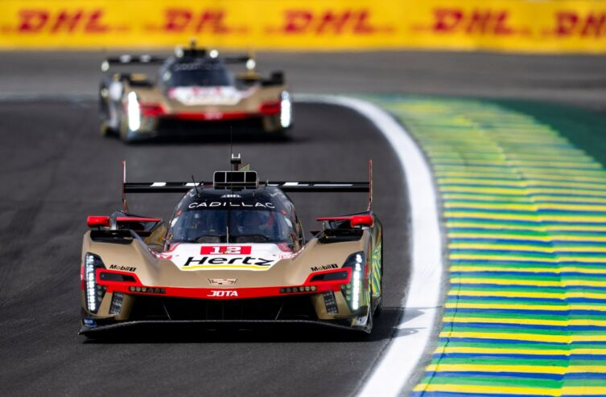
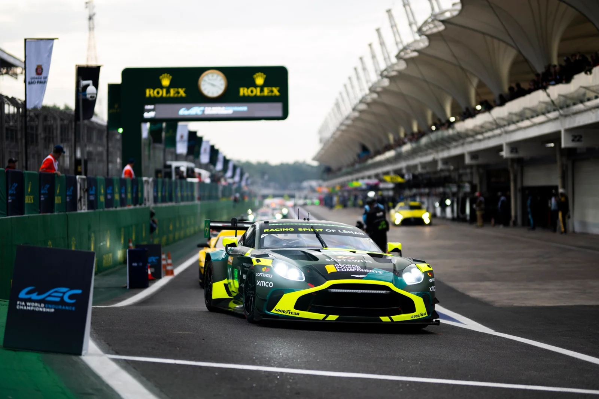

Cadillac Domina e Conquista Vitória Histórica nas 6 Horas de São Paulo do WEC 2025; Dudu Barrichello Brilha na LMGT3

Interlagos, São Paulo – 13 de julho de 2025 – O Autódromo de Interlagos foi palco de uma corrida memorável neste domingo, com a realização das 6 Horas de São Paulo, a quinta etapa do Campeonato Mundial de Endurance (WEC) da FIA. A edição de 2025 ficará marcada pela primeira vitória da Cadillac na categoria Hypercar, um triunfo que consolidou a força da equipe norte-americana no circuito internacional.
A equipe Hertz Team Jota #12 da Cadillac, pilotada pelo trio Will Stevens, Alex Lynn e Norman Nato, cruzou a linha de chegada em primeiro lugar, mesmo após enfrentar uma punição ao longo da prova. A dobradinha da Cadillac foi confirmada com o segundo lugar do carro #38, comandado por Earl Bamber, Jenson Button e Sébastien Bourdais, demonstrando a superioridade da marca na capital paulista.
O pódio na categoria Hypercar foi completado pelo Porsche Penske #5, de Julien Andlauer e Michael Christensen, em terceiro lugar. Equipes de peso como a Toyota Gazoo Racing e a Ferrari AF Corse tiveram um dia difícil, ficando fora da disputa pelo pódio e não conseguindo impor seu ritmo habitual. A Toyota, em particular, expressou sua insatisfação com a falta de velocidade de reta em Interlagos.

Na categoria LMGT3, a emoção foi garantida até o fim. A vitória ficou com o Lexus #87 da Akkodis ASP Team, pilotado por José María López, Clemens Schmid e Petru Umbrarescu. O Corvette #81 da TF Sport garantiu a segunda posição.
No entanto, o grande destaque para o público brasileiro foi a performance de Eduardo "Dudu" Barrichello. Pilotando o Aston Martin #10 da Racing Spirit of Léman, Dudu conquistou a terceira posição, garantindo um pódio emocionante em casa. O jovem piloto já havia brilhado na véspera, ao cravar a pole-position na categoria LMGT3, mostrando seu potencial no cenário mundial do endurance.